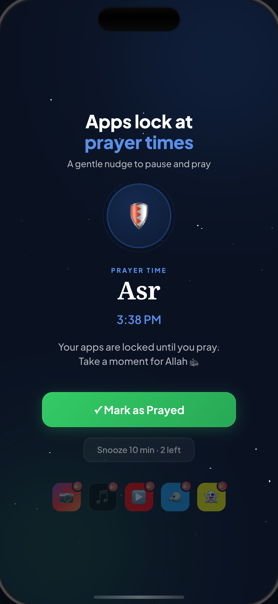
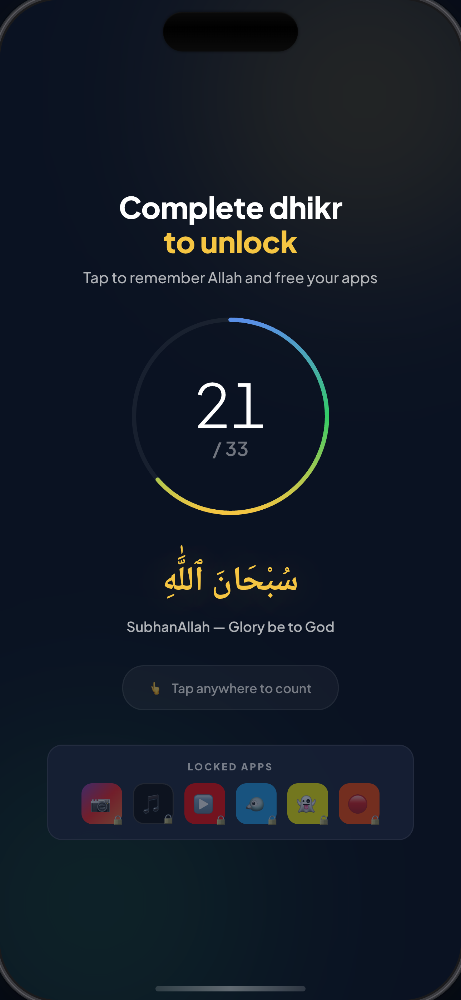
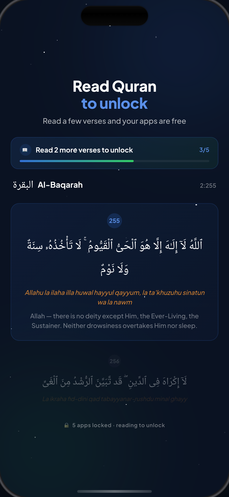

Pray first
When it's time to pray,
When it's time to pray,
your apps lock.
Distractions pause. Your prayer comes first.
Download on theApp Store
★★★★★· Free to start · 3-day trial



Swipe
Make space for what matters.
Download on theApp Store
★★★★★· Free to start · 3-day trial
Questions
Is Qif free?
Yes — free to start with a 3-day trial. No card needed to begin.
How do I unlock my apps?
Mark your prayer, complete a short dhikr, or read a Quran verse. You choose.
Does it know my prayer times?
Yes. Qif uses your location to calculate accurate prayer times automatically.